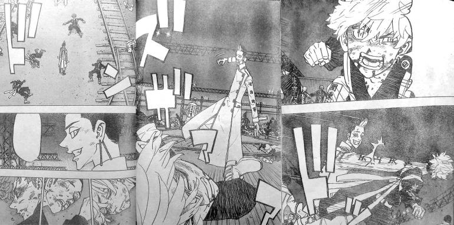
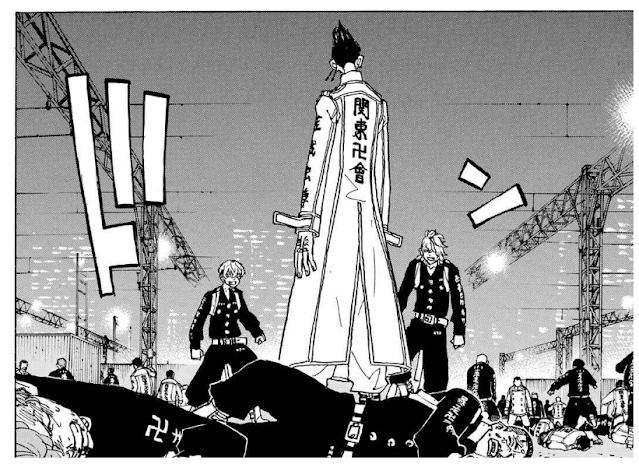
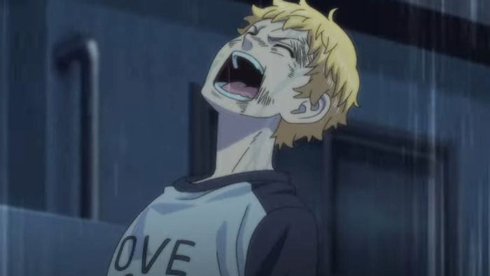

Sau nhiều chap có phần áp đảo các thành viên của Kantou Manji thì giờ đây băng Tokyo Manji đời thứ hai đang đối mặt với thử thách thực sự. Mikey Vô Địch ra tay, Hanma cũng tham gia và bộ đôi Benkei và Waka cũng bắt đầu nghiêm túc. Đây đều là những thành viên mạnh nhất của Kantou Manji và Tokyo Revengers chap 253 chứng kiến sức mạnh của những "quái vật" này.
Mở đầu Tokyo Revengers chap 253, Chifuyu hét lớn và cố đánh Hanma, trong khi đó Hanma lại không có bất cứ vết thương nào. Đối thủ của cậu ta, Chifiyu, Mitsuya, Hakkai, Akkun đều trông kiệt sức vì trận đánh trước đó và không thể tiếp tục chiến đấu. Hanma đánh bại hết 4 người bọn họ một cách khá dễ dàng. Với nụ cười đầy tự mãn, phó thủ lĩnh của Kantou Manji hét to "Dọn dẹp xong rồi đây" Tokyo Revengers chap 253 chuyển cảnh tới kết quả của trận chiến giữa Pahchin và Mikey. Lúc này Pahchin đã bị Mikey đánh bại, ngay lập tức Pehyan cùng anh em Kawata xuất hiện để đấu với Mikey. Smiley tấn công Mikey và hét to tên thủ lĩnh của Kantou Manji. Đáp lại thái độ của đối thủ, Mikey với vẻ mặt lạnh lùng tung cú đá hạ gục ngay lập tức Smiley. Tất cả đều nhận ra sức mạnh của Mikey quá khủng khiếp và họ không có cách đánh bại cậu ta nhưng vẫn tiếp tục chiến đấu với Mikey. Smiley, Angry và Peh lần lượt bị đánh bại bởi Mikey. Mikey: Tao xong việc với mày rồi, Angry.
Takemichi nhìn thấy toàn bộ sự việc từ xa và hoảng hốt khi Mikey liên tiếp đánh hạ những người bạn của mình và tỏ ra lo lắng. Koko và Inui cũng đã kiệt sức khi tiếp tục chiến đấu với 2 "huyền thoại" là Benkei và Waka. Waka: Hai đứa đã chống chịu với tụi này tốt đấy! Takemichi không thể tập trung vào trận đấu với Kakucho và bị đối thủ đánh mạnh Kakucho: Mày nhìn đi đấu đấy, thằng ngốc này! Tokyo Manji đời thứ hai đang dần thua trận và Kantou Manji đã đảo ngược tình thế. Takemichi bị đánh bay đi, ngã nhào xuống cạnh đường ray. Cậu bắt đầu bật khóc. Takemichi: Liệu có phải quá liều lĩnh không?
Takemichi: Liệu có phải quá liều lĩnh không? Đúng lúc này cậu vô tình chạm vào đường ray và nhìn thấy hình ảnh từ tương lai. Tất cả bạn bè của cậu ấy đều chết vì bị tàu lửa đâm, cậu nhìn thấy Sanzu trong đó đang nở nụ cười man rợ. Sanzu: Một lũ phiền phức. "Là Sanzu... Cậu ta đang muốn giết tất cả mọi người?" Takemichi sững sờ với viễn cảnh mà cậu nhìn thấy và nhìn sang hướng Mikey, rõ ràng đây là người duy nhất ngăn chặn được viễn cảnh tồi tệ này.